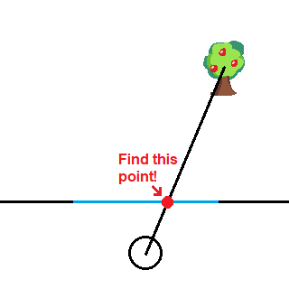
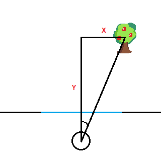
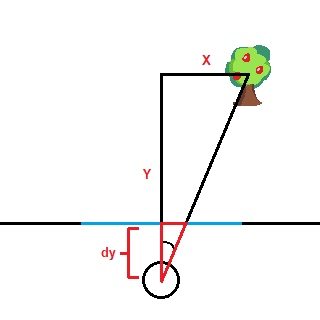
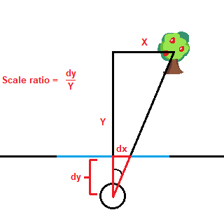
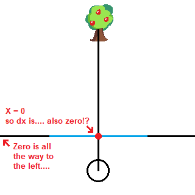
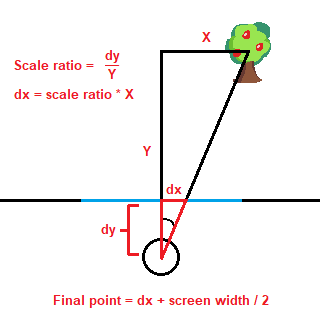
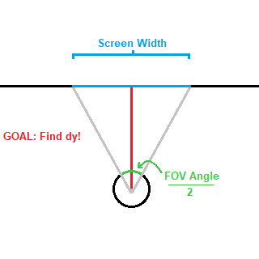
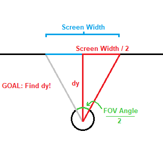
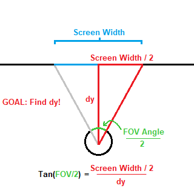
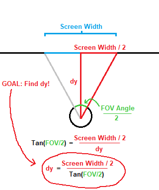

Perspective Projection Part 1: Screens and Windows!
Let's go back to our example from the previous page. Our viewer or player sits outside of the world of trees we've created, and they need to look through a window in order to see it. This window, however, is not any ordinary window. It basically takes what can be seen on the other side of the window and essentially "flattens" it (this window is formally known as a "projection plane")
Remember, the screen you're viewing this on is only two-dimensional! In order to render a 3D scene, your device has to take this 3D scene and "flatten" it to a 2D image on your screen. The same applies to our example, where our 2D game world of terrible trees needs to be "flattened" (or more accurately, projected!) onto the 1D screen represented by our blue line.
So let's figure this out! First, let's simplify this screen to just one tree. If we can figure out how to project one tree then we can absolutely project all of them! I've also decided to make it interactive, so you can change the position of the tree in the scene. Give it a whirl~!
Did you have fun? You better have, this canvas stuff is tedious!
Projection Basics
You may have noticed that I drew a line between the viewer and our lovely little tree. This line is going to help us project the object onto our screen, because where the line intersects with the screen is the point where our object projects to!
A crude diagram showing us our ultimate objective... if we can do this in 2D then 3D will be a cinch!
Now brush up on some of those geometry lessons you haven't thought about in years, because we're gonna need 'em! Let's try drawing a right triangle using the line between the viewer and the object, like so:
The adjacent side is labeled as Y and the opposite side is labeled as X, with Y being the y distance between the viewer and the object and X being the x distance between the viewer and the object. And no, we're not going to need trigonometry (yet!)For those with a keen eye, you may have noticed that there isn't one, but TWO triangles here: the one we drew and a smaller version of that same triangle created by the intersection between the triangle and the clipping plane:
The second triangle is highlighted in red!I went ahead and labeled the adjacent side of the smaller triangle "dy," which is the distance between the viewer and the screen.Thanks to this, we can actually establish a scale ratio between the two triangles that will solve the problem for us.
The scale ratio is simply dy/Y, which we can use to find the opposite side of the smaller triangle (labeled "dx") simply by multiplying X by the scale ratio.So dx = scale ratio * X, that means we've found the point right??? Well..... it's probably better to just show you:
We were close! However, X is the distance between the object and the viewer, and if the distance is nothing then the projection point also lies at zero. We actually need to add half of the length of the screen's width to get the right result!So the final formula comes around to:
Whew! Nice job!
Oh! Trigonometry...
Now, at this point you could be satisfied. But at this point you might ask yourself, "how do we determine how far the viewer should sit from the screen?" You could actually set it to any arbitrary point, nobody would really care. BUT, you could also use FOV (Field of View) to determine how far or near the viewer should sit! This means trigonometry YEAHHHHHHH
More crude drawings. You love them, you really do.Our goal this time is to find "dy" using our FOV angle and our screen width. The former we can set ourselves and the latter we should already know!(Oh, and FOV Angle is halved because the dy line cuts the angle in half)
Oh hey look a triangleNow we know that the opposite side is half of the screen's width. We've got an angle, the length of the opposite side, and we need to know the length of the adjacent side.The tangent of an angle (FOV Angle / 2) is equal to the length of the opposite side (Screen Width / 2) divided by the length of adjacent side (dy), so let's use that!
Now we're getting somewhere!Finally, let's solve for dy by rearranging the equation using basic algebra. If you're lost then I suggest it's time to hit the books, dweebenheimer!(It's really simple though, multiply by dy on both sides then divide by Tan(FOV/2) on both sides)
That gives us dy = Half of Screen Width / Tan(Half of FOV). Not too bad, huh?Now check it!
Try playing around with those values! Note how when the FOV is narrow, the scale factor isn't quite as profound as when the FOV is very wide!At this point, we now have EVERYTHING we need in order to do some SUPER SCALIN'!